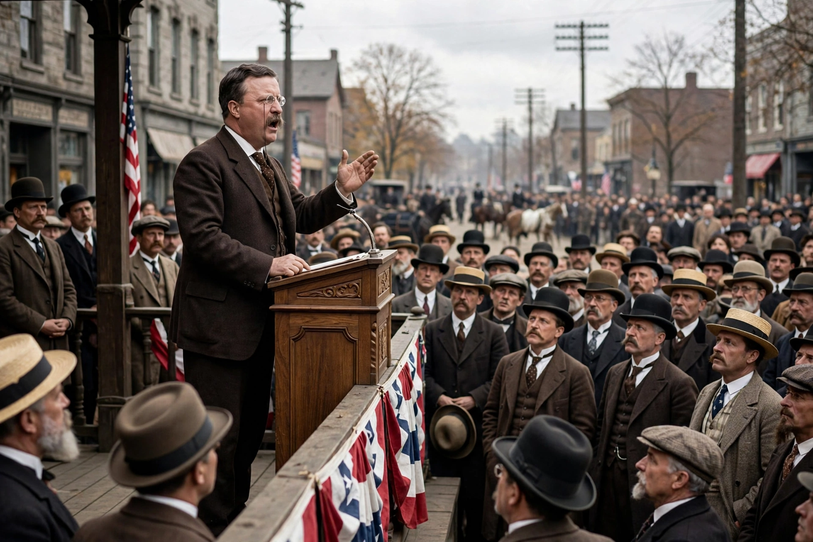

The Square Deal was Theodore Roosevelt's domestic programme, which reflected his three major goals: conservation of natural resources, corporate regulation, and consumer protection. These three demands are often referred to as the 'three C's' of Roosevelt's Square Deal. Thus, it aimed at helping middle class citizens and involved attacking plutocracy and bad trusts while at the same time protecting honest business from the extreme demands of organised labour.

Roosevelt first used the phrase after intervening in the 1902 coal strike, mediating between miners and owners and insisting both sides got a 'square deal'. A progressive Republican, he believed government should act as a neutral arbiter between capital and labour.
The programme included trust-busting prosecutions under the Sherman Antitrust Act (notably Northern Securities Co. v. United States, 1904), the Hepburn Act (1906) strengthening railroad regulation, the Pure Food and Drug Act and Meat Inspection Act (both 1906), and extensive conservation: some 230 million acres of public land protected, five national parks and the U.S. Forest Service established under Gifford Pinchot.
The Square Deal expanded federal regulatory power and set precedents for later reform programmes, and Roosevelt's Rough Riders fame helped sustain his public image. See also reformism.